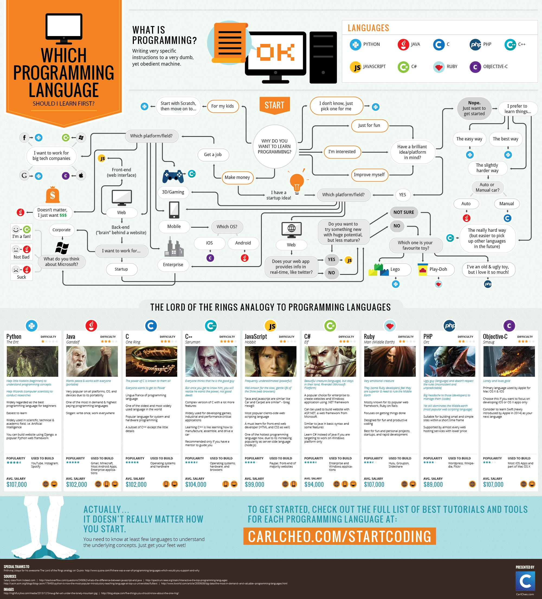

[TOC]
Introduction
Programming languages are the tools that computer engineers use to solve computational problems. There are a myriad of computer languages, but they have in common one single objective:
- Translate a set of words/instructions, provided by a programmer to solve a problem, into machine instructions.
It is important to know, that at the end, a processor is a machine that requires specific instructions, and can only execute the instructions that were build into its architecture.
When coding (writing down lines of text describing an algorithm that solves a given problem), words or instructions can take any form:
- common vocabulary: if temperature is greater or equal than 20°C ,then turn LED on, else turn LED off.
- mnemonics/symbols:
LED = (t >= 20) ? (1) : (0); - mathematical symbols: f(t) = $f_{LED}(t) = \lfloor \frac{t}{100} + (0.5 - \frac{20}{100})\rfloor$
- a hexadecimal number representing a machine instruction
0x00a70733(RISC-Vadd a4,a4,a0)
Machine instructions are chains of bits {1|0} that provide the processor the input values to its logic gates, and in so, performing logic/arithmetic operations.
Programming Paradigms
Usual definition: a programming paradigm is a way or style of programming.
A problem can be solved in different ways. The way to solve it or the how to come/write the solution depends on the programming paradigm used.
In computer science, programming paradigms are split in two categories:
- Imperative: refers to explicitly writing instructions to solve a problem. It is a direct approach to tell the system what to do, following more or less the processor/system architecture. The programmer needs to describe the control flow.
- Declarative: refers to describe what needs to be done to solve a problem. The programmer needs to describe what operations are required on the data to obtain a result. The how to implement the what is left to the language implementation.
It is important to know, that the paradigm used to solve a problem depends on the type of the problem. Although, it would be possible to solve any problem with any programming paradigm, finding the optimal implementation/language/paradigm is a task for the programmer.
flowchart TD
Paradigm --> Imperative
Paradigm --> Declarative
subgraph ..
Declarative --> Logic
Declarative --> Functional
Declarative --> Database
end
subgraph .
Imperative --> Procedural
Imperative --> OO(Object Oriented)
Imperative --> PP(Parallel Processing)
end
https://www.youtube.com/watch?v=E7Fbf7R3x6I
Imperative
Programming style: programmer provides coding instructions
Procedural
A bunch of functions with instructions that can be reused. Programmer defines functions and pass data between them.
Object Oriented
Everything is an object. An object has properties (variables) and methods (functions). Programmer define an object, its properties and a set of methods that change the state of the object. Programmer describes how the object interact between them.
OOP Design Patterns
Parallel Processing
Break up tasks among multiple processors
Declarative
Programming style: programmer describes in a more natural form what result is needed.
Logic
Functional
Taking procedural to a higher level, making functions:
- Immutable
- A variable (first class citizen) (e.g. can be assigned to variables, passed as arguments and returned from other functions)
- No internal state (pure function)
Programming Languages Objectives
Abstraction
- Help transform ideas/solutions
- Safe
- With less lines of code